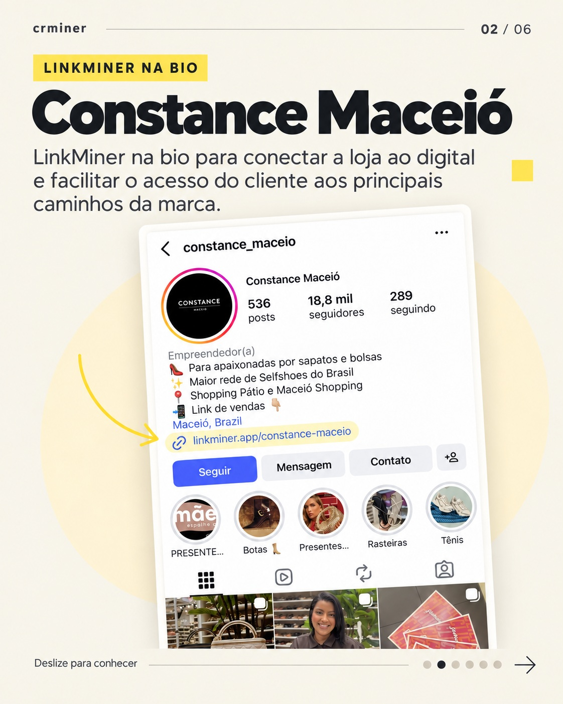
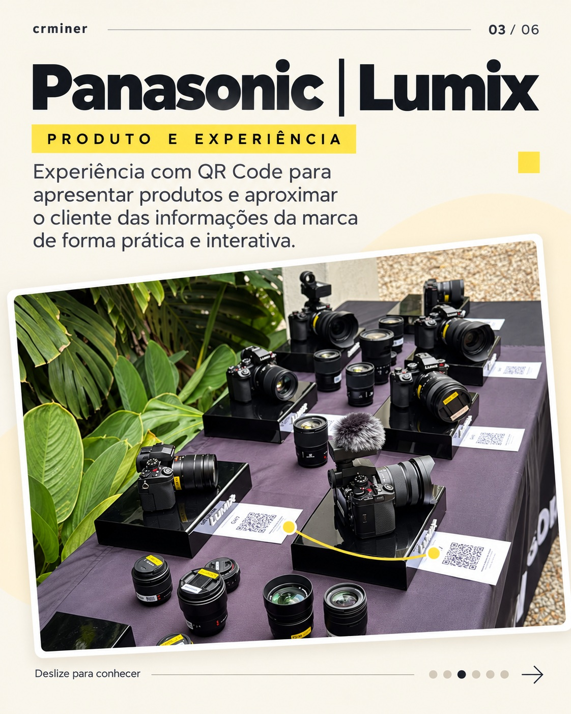
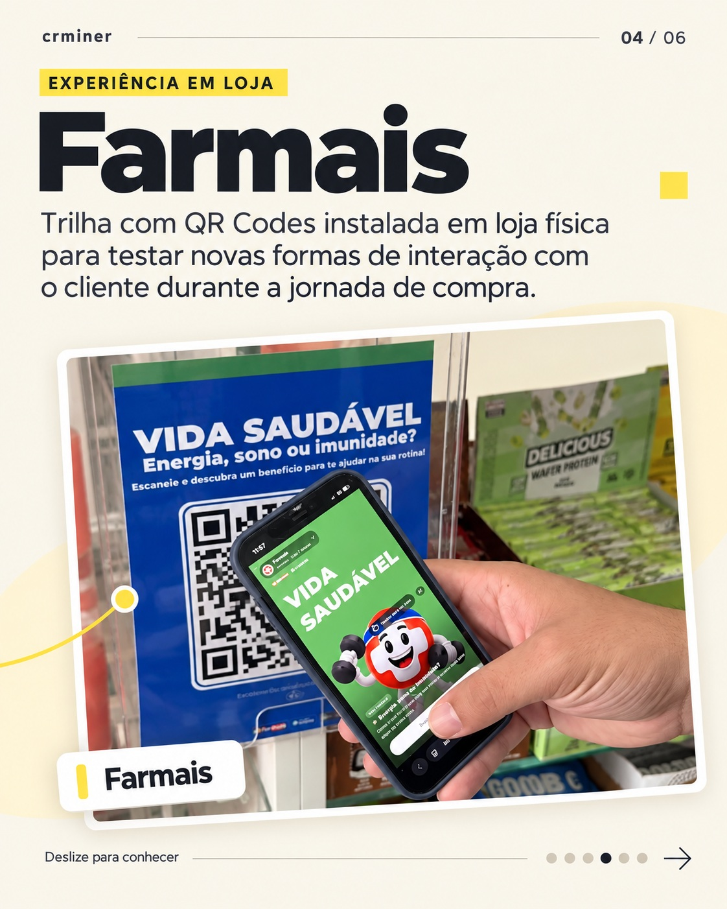

Da captura ao relacionamento, em um só CRM.
Mais contexto para vender. Mais atenção ao cliente.
O crminer capta, qualifica com IA e acompanha cada contato.
Empresas que já usam o crminer em suas operações.


Rotina comercial
Uma nova rotina comercial
Sua equipe foca em vender. O crminer faz a rotina avançar.
O contato chega, a correria aumenta e o CRM fica para depois.
Com o crminer, agentes de IA atendem, qualificam, agendam e organizam os próximos passos, mantendo o CRM atualizado e o relacionamento ativo.
Você define a função de cada agente: vendas, suporte, financeiro, pós-venda e muito mais.


Em vez de um formulário longo, uma conversa. uma maneira mais eficiente de engajar seus clientes.
Solicitar uma demonstraçãoVeja como a IA pode ajudar a qualificar antes do atendimento.
Como funciona
Uma jornada completa, configurada para sua operação.
Capture onde seu público está, faça as perguntas certas e mantenha o contexto até o próximo atendimento.
01Capture o interesse
Abra caminhos para o interesse chegar.
Use LinkMiner, QR Codes, widget no site e WhatsApp oficial. Se você já tem uma página de campanha, a API também pode enviar dados ao crminer. Cada ponto de captura pode ter sua própria experiência.


Etapa 1 de 5
Recursos
Capture o contato dos seus visitantes.
Escolha onde a conversa começa. Configure perguntas para cada experiência de captura e leve as respostas ao mesmo CRM.

LinkMiner
Reúna links úteis, produtos, serviços e cupons na bio. Cada item configurado para captura pode abrir uma conversa com perguntas e IA. Conhecer o LinkMiner

QR Codes e experiências
Na vitrine, no evento ou no balcão, cada código ou link pode abrir uma experiência com perguntas pensadas para aquela oferta.

Widget no seu site
Ajude quem está navegando a tirar dúvidas. Com a conversa configurada, a IA responde e registra o interesse para sua equipe continuar o atendimento.
WhatsApp oficial
Com o número conectado, as conversas entram no CRM. Sua equipe atende com histórico; nos planos com agentes, a IA pode responder e qualificar conforme suas regras.
Já tem uma landing page? Use a API.
Com a integração configurada, os contatos da sua LP também podem chegar ao crminer com os dados e a origem que ela coletou.
Na prática
Do link da bio à experiência dentro da loja: veja o crminer na prática.
Cada negócio tem uma necessidade diferente. É a partir dela que construímos cada aplicação.
Deslize para conhecer as aplicações

LinkMiner na bio
Constance Maceió
Um lugar para reunir os principais caminhos da marca, facilitar o acesso dos clientes e automatizar atendimentos na loja.

QR Codes nos produtos
Panasonic | Lumix
Ao lado das câmeras, os QR Codes conectam quem está conhecendo os produtos às informações da marca.

Trilha de QR Codes na loja
Farmais
Uma trilha instalada na loja para testar novas formas de interação durante a jornada de compra.
Conteúdos
Conteúdos para ir além da primeira conversa.
Explore ideias sobre captura, atendimento e relacionamento para aplicar no seu negócio.
Os conteúdos serão publicados aqui em breve.

Demonstração
Da captura ao relacionamento. Veja tudo funcionando junto.
Peça uma demonstração do fluxo completo ou crie uma conta grátis para começar com o LinkMiner.